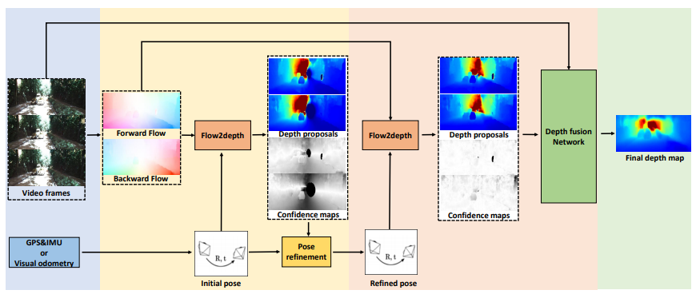

Video Depth Estimation by
Fusing Flow-to-Depth Proposals
IROS 2020

Abstract
Depth from a monocular video can enable billions of devices and robots with a single camera to see the world in 3D. In this paper, we present an approach with a differentiable flow to-depth layer for video depth estimation. The model consists of a flow-to-depth layer, a camera pose refinement module,and a depth fusion network. Given optical flow and camera pose, our flow-to-depth layer generates depth proposals and the corresponding confidence maps by explicitly solving an epipolar geometry optimization problem. Our flow-to-depth layer is differentiable, and thus we can refine camera poses by maximizing the aggregated confidence in the camera pose refinement module. Our depth fusion network can utilize depth proposals and their confidence maps inferred from different adjacent frames to produce the final depth map. Furthermore, the depth fusion network can additionally take the depth proposals generated by other methods to improve the results further. The experiments on three public datasets show that our approach outperforms state-of-the-art depth estimation methods, and has reasonable cross dataset generalization capability: our model trained on KITTI still performs well on the unseen Waymo dataset. Our source codes are publicly available at https://github.com/jiaxinxie97/Video-depth-estimation.git.
Technical Video
Motivation & Key idea
We have presented a video depth estimation method that builds upon a novel flow-to-depth layer. This layer can help refine camera poses and generate depth proposals. Beyond the depth proposals computed from the flow-to-depth layer, depth maps estimated by other methods can also serve as depth proposals in our model. In the end, a depth fusion network fuses all depth proposals to generate a final depth map.
Architecture
First, we estimate the optical flow from the video frames and obtain initial camera poses from GPS and IMU or applying odometry algorithms. Second, the initial camera poses are refined by maximizing the sum of confidence map in pose refinement module. Third, generating depth proposals and confidence maps with refined camera poses through the flow-to-depth layer. Finally, we obtain the final depth map by a depth fusion network that fuses the given depth proposals, confidence maps and target frame.